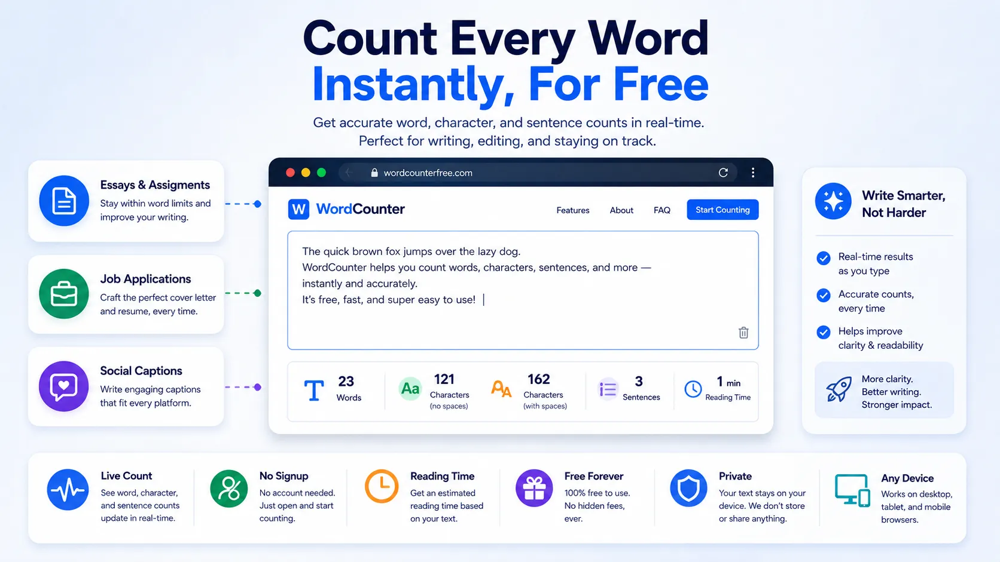

How to Count Words Online for Free (Essays, Posts & Captions)

Almost every piece of writing comes with a limit attached to it somewhere. A university assignment says "1,500 words minimum." A job application asks for a summary "under 100 words." A social caption gets cut off if it runs too long. Counting by hand is slow and unreliable, and most word processors bury the count in a status bar you have to hunt for.
This guide covers how word counting actually works, what the different numbers mean, and how to check your text instantly for free using NexaTools no software, no signup.
Why Word Count Still Matters
Word limits exist for a reason: they force clarity. A recruiter skimming resumes wants a tight summary, not a paragraph. A professor grading forty essays sets a range so every student puts in comparable effort. A platform like Twitter enforces a hard character cap so posts stay scannable. Whatever the context, going noticeably over or under a stated limit usually signals to the reader that you didn't follow instructions closely which is rarely the impression you want to make.
Step-by-Step: Count Your Words with NexaTools
- Open the NexaTools Word Counter
- Paste or type your text directly into the box
- Watch the word, character, sentence and paragraph counts update live
- Check the estimated reading time if you need it for a blog post or script
- Copy your text back out once you're happy with the length
What Each Number Actually Means
- Word count counts groups of characters separated by spaces; hyphenated words and numbers usually count as one word each
- Character count counts every letter, number, punctuation mark and space individually
- Character count (no spaces) is the same measurement minus the spaces, useful for platforms that only count visible characters
- Sentence count is based on punctuation marks like periods, question marks and exclamation points
- Reading time is estimated using an average adult reading speed, so it's a guideline rather than an exact figure
Common Word-Count Mistakes to Avoid
A surprising number of word-limit problems come down to small misunderstandings rather than actually having too much to say. Watch out for these:
- Confusing word count with character count a 280-character limit is not the same as a 280-word limit
- Not accounting for titles or headers some assignment guidelines count the title, others don't; check the instructions carefully
- Padding with filler words hitting a minimum by adding unnecessary phrases usually makes writing worse, not better
- Trusting your word processor's count blindly different tools sometimes count hyphenated terms or numbers differently; a quick cross-check avoids surprises
Writers & Students: A Quick Checklist
- Confirm whether the limit is a hard maximum or a flexible target
- Check if titles, headers, or citations count toward the total
- Read your draft once more after trimming it word count and quality can drift apart when cutting quickly
- If submitting online, paste the final version into a counter one last time before hitting submit
📝 Count Your Words Free
No signup, no limits. Paste your text and see live word, character and reading-time stats instantly.
⚡ Open Word Counter